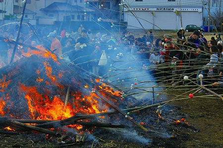

小正月の行事、
どんど焼きをご存知であろうか？
正月の飾りを地域ごとに一箇所に持ち寄って燃やす行事で、東北から九州まで広く行われている。場所によっては
左義長と呼ぶところもある。
全国的に分布している行事なのだが、近年、特に首都圏内ではほとんど見られなくなってしまったような気がするので、今回ここに記しておくことにした。
「見られなくなってしまったような気がする」といったものの調べてみると首都圏でもチラホラやってるみたい…。
特に多摩川周辺ではけっこうあちこちでどんど焼きが行われているようだ。
…というわけで、今回どんど焼きを見に行ったのは
川崎市の麻生区。関東でも比較的大きなやぐらが組まれるというので出かけてみた。
小さな規模のどんど焼きはこれまでにも何度か見たことはあったが、大規模なものを見るのは初めてな私。
遠足前日の小学生のごとく居ても立ってもいられなくなり、
ついつい前日の様子まで見に行っちゃいましたよ。寒いのに。
前日の昼過ぎ。
どよ〜んとした曇天の中、何やら
異様な塔状のようなものが見えてきた。
そう、それが
どんど焼きのやぐらなのだ。
如何であろう、この威容。高さは10メートル以上はあろう。
心棒を中心に竹を立てる。まるでネイティブアメリカンのテント、ティーピーのようでもあり、地中から湧き出てきた蟻塚のようでもある。
いずれにせよ平らな田んぼのど真ん中に垂直方向に伸びる構造体が存在すること自体が農耕民族の精神的土壌の中では心穏やかではない光景といえよう。
心棒だけは周りの竹よりも長くて、その先端には一個だけ大きなダルマが載せられているのだ。
様々なサイズのダルマがこの円錐状のやぐらにくくり付けられている。
下の方には正月の飾り物が多く付けられている。
集められた達磨や正月飾りを丹念に取り付けているところ。
正面は板で塞いであったが中には笹が敷き詰められており、ここにも飾り物が詰まれていた。
刈り取りが終わった田んぼにすくっと立つやぐら。どこか誇らしげでもあり、でも何となく正月というハレの日の終わりを告げるような少し寂しげな風情でもあった。
そういえば自分の子供時代を思い出すと、秋から春までの田んぼは
突如出現する期間限定の格好の遊び場だった。
大抵正月の凧揚げはこういった田んぼでやったものだし、無性にだだっ広い空間に感動し、意味もなく走り回っていた記憶がある。
むしろ子供の頃は「ここの空き地、何で夏の間は水浸しなんだろう」くらいにしか思ってなかった。子供って勝手だねー。
…と、いうわけでどんど焼き当日である。
昨日とは打って変わって抜けるような青空が広がっていた。
昨日のどこか寂しげな雰囲気はどこへやら。威風堂々としたやぐらは大勢の人に囲まれており、いかにも
祭の主人公といった貫禄を見せていた。
周辺にはテントが張られ、すでに大勢の人が準備に追われていた。
昨日は板で塞がれていた部分には次から次へと正月のお飾りが運び込まれている。
緑の竹と松飾り、赤い達磨や正月の飾り物。補色だけに目がチカチカしてくる。
まるで
半月遅れの和風のクリスマスツリーみたいだ。
もっとも天辺の星の部分は達磨さんだが。
正月の飾りをセルフで貼り付ける人。
こうして昨日とは比べ物にならないくらい大量の達磨や松飾で埋め尽くされてきた。
高いところに設置するのは結構大変そう。
段々赤成分が増えてきた。

もう、達磨がこぼれ落ちてきそうだ。
正面には供え物がセッティングされ、そろそろ和風クリスマスツリーの完成である。
…と、中央のやぐらにばかり注目していたら周囲では新たな動きが起こっていた。
どこからともなく長い竹が大量に運び込まれてきたのだ。
竹は参加者に配られ、
一種異様な雰囲気に。
竹の先端には鋭く尖った三つ又の木の枝が取り付けられている。
そこに三色の団子を刺してある。
むむむ。一体何事だ。
竹槍部隊の出陣式みたいな雰囲気になってきたな…。
この先の展開がほとんど読めないぞ。
やぐらを燃やすのはこれまでの経験上判るが、竹槍は一体何に使うのだろう？？？？？
も、もしかして…祭りが盛り上がったら
お互いに竹槍で突きあうケンカ祭りなのか？
チョ、チョット待ってくれ。もしそうだとしたら当方ほぼ戦場の最前線にいるカメラマン状態じゃないか！
ヘルメットもプロテクターも防弾チョッキも装着してないぞ（そもそも持ってないし）！
おまけに傷害保険も心許ないぞ（注；傷害保険は戦闘および内乱状態は適用外です）！
かくなる上は一番弱そうな輩の竹槍を奪って参戦するしか身を護る術はないぞ！大丈夫か、俺！？
…というわけで私一人緊張しまくりの中、定刻を迎えた。
いよいよ竹槍でお互いの急所を突きまくる死の祭典（かも知れない）どんど焼きの始まりである。
神官の祝詞がはじまり、続いて関係者が次々とやぐらに向かって参拝していく。
その様子を固唾を呑んで見守る竹槍部隊。
兵法の常として
一番弱そうな輩はすでにチェック済み。
いざとなればすぐ隣にいる初音ミクのトレーナーを着た虚弱っぽいお兄ちゃんの竹槍を奪って参戦できるように気持ちの準備だけはしておく。
無論、有事の際は初音ミクお兄ちゃんには戦場の屍と化していただくことになる。
…などと妄想している間に形式的な神事は終わっていた。
次に何が起こるのか？ミクお兄ちゃんの位置をさりげなく確認しつつ次の動きを待つ。
すると、突如
やぐらに火がつけられた。
ベテランのおじさんに混じって子供も火をくべている。
おおお、いよいよやぐらが燃やされるのか！
火は見る見るうちに回っていく。
恐らくこの日神奈川県で一番大きなキャンプファイヤー（火事を除く）だとおもう。
煙が凄い。そして竹の爆ぜる音も凄い。
全てが想像よりも8割増しに凄い！
あっという間にやぐら全体が火に包まれた！
前言撤回。もはやキャンプファイヤーどころの騒ぎではない。10mの巨大な火柱が燃え盛っていて大迫力ナリ。
このどんど焼き行事は
正月に迎えた歳神を送り返すための行為なのだとか。
お盆に帰ってきたご先祖サマを送り火で帰すのと一緒の理屈なんだろな。
ただしお盆の送り火のようなロマンチックな燃え方ではない。まるで「とっとと出ていきな！」と言わんがばかりの勇壮な燃やし方だ。
空中に飛散した火花が周囲に延焼しないようにパトリオットミサイルよろしく空中で迎撃する消防隊の皆さん。
乾燥した時期だけに真剣そのものだった。
寒風吹きすさぶ天候だったが、やぐら周辺はむしろ燃え盛る炎で暑いくらいだ。
炎の近くにいると段々ボーっとしてくる。
遠赤外線効果というものを身をもって感じていると、さっきまでは綺麗な円錐形だったやぐらが段々歪んできた。
やぐらの先端を支えていた綱も焼き切れてしまい、熱風に煽られてゆらゆら動くようになってしまった。
もちろん達磨や松飾なども燃え尽きたり落下したり。
点火から約10分足らず、ついにその時は訪れた。
芯柱がゆっくりゆっくりと傾き始めたのだ。
主を失った竹は最早統率力を失い、バラバラになっている。
まるで巨大生物が倒れるかのごとくスローモーションのようにその躯体が傾いていく。
力学的な臨界点を越えた芯柱は突如くの字に折れ曲がり…
遂に地上へと叩きつけられたのであった！
ズドーン！
ガッシャーン！
モクモクモクモク…
崩れ落ちた巨躯は最早、煙を上げるだけの瓦礫と化した。
神聖なやぐらが炎によって瓦礫に変容する瞬間。
垂直方向に伸びた非日常の光景が「火付け」という暴力的なアクションによって再び水平方向の日常に強制リセットされていく。
このカタルシスこそがどんど焼きの本質なのだろう。
とはいえ怪獣（いや、神様の拠代なんですけどね）もしぶとい。延々と燃え続け、最後の断末魔の叫びをあげている。
ようやく炎が下火になった頃、周辺が騒がしくなってきた。
ついに竹槍部隊が動き始めたのだ！
おおおおおお！強烈な火柱の大きさにすっかり忘れていた！
これから竹槍で死闘を繰り広げる（かも知れない）のだった。
まずい！先ほどの初音ミクお兄ちゃんを見失ってしまった！かくなる上はこのおばあちゃんの竹槍を奪って生き延びるか…。
祭を取り仕切るおじさん達の合図で竹槍部隊が一斉に動き出す。キタキタキター！
覚悟を決めていると、竹槍部隊、おもむろに竹槍を水平に寝かし、先端を崩れたやぐらに掲げ始めたではないか！

おおお、竹槍で戦闘を行うのではなく、先端に刺した餅を火にくべるためのモノだったのか！
そういえばこの餅を食べることによって
無病息災を祈るのは世の常だった。
あまりの竹槍の数に圧倒されてすっかり忘れてたよ。
気がつけばミクお兄さんもおばあちゃんも一心不乱に竹の穂先の餅を火にくべている。
私の心の中でどす黒く渦巻いていた卑怯な兵法などどこへやら。皆穏やかな表情で無病息災と家内安全を祈りつつ清い心で下火になった炎を見つめていた。
スマン、ミク兄貴&おばあちゃん。
こうしてこの地に本格的な新年がやってくるのであった。
あらためまして、あけましておめでとうございます。